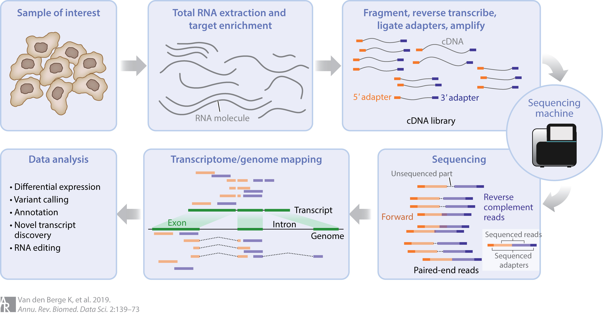

>ERCC-00002
TCCAGATTACTTCCATTTCCGCCCAAGCTGCTCACAGTATACGGGCGTCG
GCATCCAGACCGTCGGCTGATCGTGGTTTTACTAGGCTAGACTAGCGTAC
GAGCACTATGGTCAGTAATTCCTGGAGGAATAGGTACCAAGAAAAAAACG
AACCTTTGGGTTCCAGAGCTGTACGGTCGCACTGAACTCGGATAGGTCTC
AGAAAAACGAAATATAGGCTTACGGTAGGTCCGAATGGCACAAAGCTTGT
TCCGTTAGCTGGCATAAGATTCCATGCCTAGATGTGATACACGTTTCTGG
AAACTGCCTCGTCATGCGACTGTTCCCCGGGGTCAGGGCCGCTGGTATTT
GCTGTAAAGAGGGGCGTTGAGTCCGTCCGACTTCACTGCCCCCTTTCAGC
CTTTTGGGTCCTGTATCCCAATTCTCAGAGGTCCCGCCGTACGCTGAGGAFile Types and Workflows
RAdelaide 2024
Dr Stevie Pederson
Black Ochre Data Labs
Telethon Kids Institute
Telethon Kids Institute
July 11, 2024
File Types
File Types
- Bioinformatics workflows involve multiple steps
- Different file types at different steps
- Most are plain text based
- Often compressed to reduce size (i.e. binary)
- Often use the command line to preview large files
Ris able to parse or interact with most common file types- Loading large files into memory can be problematic
- Loading a 12Gb file will be difficult if you have 8Gb of RAM
File Types
- Bioconductor existed long before high-throughput sequencing
- Established in 2001
- Human Genome Project Completed in 2003 (ish)
- High-Throughput Sequencing emerged around 2005
- Methods and file types established before sequencing
- The days of low compute resources (32bit OS, RAM in Mb)
- As technology develops, so do methods, file types and classes
Transcriptomic Analysis
- Early transcriptomic analysis was performed on microarray data
- Many methods and data structures built around this data
- Bulk RNA-Seq is now relatively mature for gene-level analysis
- Has extended earlier data structure & methods
- Also introduced multiple new methods
Transcriptomic Analysis
- Bulk RNA-Seq at the transcript level is still relatively immature
- Single-Cell RNA-Seq now has a degree of maturity
- Cell trajectory analysis also moving rapidly
- Spatial Transcriptomics is an emerging and rapidly developing technology
- Also includes imaging technologies
- Today we’ll focus on gene-level, bulk RNA-Seq analysis
- Learning file types, packages, object classes, methods
- Also visualisation strategies
Transcriptomes
- Genes are considered as genomic regions transcribed into RNA
- The complete region (i.e. locus) is transcribed
- Introns are spliced out \(\implies\) mature transcripts
Image courtesy of National Human Genome Research Institute
Transcriptomes
- Multiple databases exist for gene annotations
- UCSC, NCBI (EntrezGene)
- Ensembl, Gencode
- Bioconductor was established in the US
- Many early annotation packages were UCSC-based
- Now well established for Ensembl
- Gencode annotation packages are less common
Transcriptomes
- The latest Gencode set of annotations (Release 46, May 2024)
- 63,086 Genes
- 19,411 protein coding
- Remainder are lncRNA, pseudogenes etc
- 254,070 Transcripts
- 89,581 protein coding
- Remainder are NMD, lncRNA etc
- Shortest annotated transcript is 8nt \(\implies\) longest is 350,375nt
The Basics of Bulk RNA-Sequencing
- Intact RNA is extracted from a sample \(\implies\) millions of cells
- RNA is fragmented into 250-500bp fragments
- Lose short transcripts \(\implies\) long transcripts broken into pieces
- Prepared for sequencing
- Converted to cDNA
- Sequencing adapters added to all fragments
- PCR amplification
- Sequenced from both directions (paired end sequencing)
- Commonly 50m reads/sample
The Basics of Bulk RNA-Sequencing
- QC and Read Trimming (optional) 😇
- Align reads to the reference genome 😀
- Count how many reads for each gene 😐
- Statistical (DGE) analysis 😕
- Enrichment analysis 😰
- Interpretation 😱
- QC analysis, Statistical and enrichment analysis in R
- Trimming, aligning and counting on an HPC
- Interpretation with domain experts
The Basics of Bulk RNA-Sequencing
The Basics of Bulk RNA-Sequencing
- Alternative methods align to transcript sequences NOT the genome
- These alignments are not spliced
- Reads align to multiple transcripts
- With genomic alignments usually a single alignment
What File Types
- Reference Genome \(\implies\)
fastafile - Sequencing data \(\implies\)
fastqfile- Often QC reports in plain text, tsv-based or json format
- Alignments \(\implies\)
bamfile- Alignment log files in plain text or tsv-based format
- Gene Annotations \(\implies\)
gtffile - Read Counts \(\implies\) tsv-based format
- Variants (if called) \(\implies\)
vcffile
Reference Sequences
Fasta Files
- Sequence name + optional metadata in a single line
- These lines begin with
>
- These lines begin with
- Followed by sequence with no prefix
- Single sequences commonly wrapped on multiple lines
- Sequence can be DNA, RNA or Protein
Biostrings
- The Bioconductor package for handling these is
Biostrings - Depending on the sequence structure
\(\implies\)DNAString,DNAStringSetorDNAStringSetList
Biostrings
- General class for RNA or Proteins \(\implies\)
XString/Set/ListRNAString*orAAString*
XStringSetobjects are like listsXStringSetListobjects are like lists of lists
Biostrings
- If working with complete transcripts \(\implies\)
XStringSet - When needing exon structure within transcripts \(\implies\)
XStringSetList
Biostrings
- Using some example ERCC spike-in data
DNAStringSet object of length 92:
width seq names
[1] 1061 TCCAGATTACTTCCATTTCCGCC...AAAAAAAAAAAAAAAAAAAAAA ERCC-00002
[2] 1023 CAGCAGCGATTAAGGCAGAGGCG...AAAAAAAAAAAAAAAAAAAAAA ERCC-00003
[3] 523 TCTTGCTTCAACAATAACGTCTC...AAAAAAAAAAAAAAAAAAAAAA ERCC-00004
[4] 984 CAATGATAGGCTAGTCTCGCGCA...AAAAAAAAAAAAAAAAAAAAAA ERCC-00009
[5] 994 CGAGAGATGTTTGTAGGTGCGGA...AAAAAAAAAAAAAAAAAAAAAA ERCC-00012
... ... ...
[88] 1022 AGGAGCTCCAGTAGTTTTCCCCT...AAAAAAAAAAAAAAAAAAAAAA ERCC-00164
[89] 872 GATATGCGTTACGTGAGTCTGAT...AAAAAAAAAAAAAAAAAAAAAA ERCC-00165
[90] 1024 CCAATGAACTCAGCTATTCTTCT...AAAAAAAAAAAAAAAAAAAAAA ERCC-00168
[91] 1023 TATTGGTGGAGGGGCACAAGTTG...AAAAAAAAAAAAAAAAAAAAAA ERCC-00170
[92] 505 CTGGAGATTGTCTCGTACGGTTA...AAAAAAAAAAAAAAAAAAAAAA ERCC-00171Biostrings
[1] 92[1] 1061 1023 523 984 994 808[1] "ERCC-00002" "ERCC-00003" "ERCC-00004" "ERCC-00009" "ERCC-00012"
[6] "ERCC-00013" G|C
[1,] 0.5136664
[2,] 0.3264907
[3,] 0.3441683
[4,] 0.4725610
[5,] 0.5090543
[6,] 0.4282178Biostrings
DNAStringSet object of length 92:
width seq names
[1] 1061 TTTTTTTTTTTTTTTTTTTTTTT...GCGGAAATGGAAGTAATCTGGA ERCC-00002
[2] 1023 TTTTTTTTTTTTTTTTTTTTTTT...GCCTCTGCCTTAATCGCTGCTG ERCC-00003
[3] 523 TTTTTTTTTTTTTTTTTTTTTTT...AGACGTTATTGTTGAAGCAAGA ERCC-00004
[4] 984 TTTTTTTTTTTTTTTTTTTTTTT...GCGCGAGACTAGCCTATCATTG ERCC-00009
[5] 994 TTTTTTTTTTTTTTTTTTTTTTT...CCGCACCTACAAACATCTCTCG ERCC-00012
... ... ...
[88] 1022 TTTTTTTTTTTTTTTTTTTTTTT...GGGGAAAACTACTGGAGCTCCT ERCC-00164
[89] 872 TTTTTTTTTTTTTTTTTTTTTTT...TCAGACTCACGTAACGCATATC ERCC-00165
[90] 1024 TTTTTTTTTTTTTTTTTTTTTTT...GAAGAATAGCTGAGTTCATTGG ERCC-00168
[91] 1023 TTTTTTTTTTTTTTTTTTTTTTT...AACTTGTGCCCCTCCACCAATA ERCC-00170
[92] 505 TTTTTTTTTTTTTTTTTTTTTTT...AACCGTACGAGACAATCTCCAG ERCC-00171Biostrings
XStringSetobjects are easy to subset
DNAStringSet object of length 92:
width seq names
[1] 10 TCCAGATTAC ERCC-00002
[2] 10 CAGCAGCGAT ERCC-00003
[3] 10 TCTTGCTTCA ERCC-00004
[4] 10 CAATGATAGG ERCC-00009
[5] 10 CGAGAGATGT ERCC-00012
... ... ...
[88] 10 AGGAGCTCCA ERCC-00164
[89] 10 GATATGCGTT ERCC-00165
[90] 10 CCAATGAACT ERCC-00168
[91] 10 TATTGGTGGA ERCC-00170
[92] 10 CTGGAGATTG ERCC-00171Biostrings
- Sliding windows are simple & fast on
XStringobjects
Views on a 1061-letter DNAString subject
subject: TCCAGATTACTTCCATTTCCGCCCAAGCTGCTCA...TTTTACCCTTAAAAAAAAAAAAAAAAAAAAAAAA
views:
start end width
[1] 1 10 10 [TCCAGATTAC]
[2] 2 11 10 [CCAGATTACT]
[3] 3 12 10 [CAGATTACTT] G|C
[1,] 0.4
[2,] 0.4
[3,] 0.3BSgenome
- Biostrings are extended to provide entire genomes \(\implies\)
BSgenomeobjects
| BSgenome object for Human
| - organism: Homo sapiens
| - provider: UCSC
| - genome: hg38
| - release date: 2023/01/31
| - 711 sequence(s):
| chr1 chr2 chr3
| chr4 chr5 chr6
| chr7 chr8 chr9
| chr10 chr11 chr12
| chr13 chr14 chr15
| ... ... ...
| chr19_KV575256v1_alt chr19_KV575257v1_alt chr19_KV575258v1_alt
| chr19_KV575259v1_alt chr19_KV575260v1_alt chr19_MU273387v1_alt
| chr22_KN196485v1_alt chr22_KN196486v1_alt chr22_KQ458387v1_alt
| chr22_KQ458388v1_alt chr22_KQ759761v1_alt chrX_KV766199v1_alt
| chrX_MU273395v1_alt chrX_MU273396v1_alt chrX_MU273397v1_alt
|
| Tips: call 'seqnames()' on the object to get all the sequence names, call
| 'seqinfo()' to get the full sequence info, use the '$' or '[[' operator to
| access a given sequence, see '?BSgenome' for more information.BSgenome
seqinfo()objects provide sequence lengths & build information
Seqinfo object with 711 sequences (1 circular) from hg38 genome:
seqnames seqlengths isCircular genome
chr1 248956422 FALSE hg38
chr2 242193529 FALSE hg38
chr3 198295559 FALSE hg38
chr4 190214555 FALSE hg38
chr5 181538259 FALSE hg38
... ... ... ...
chr22_KQ759761v1_alt 145162 FALSE hg38
chrX_KV766199v1_alt 188004 FALSE hg38
chrX_MU273395v1_alt 619716 FALSE hg38
chrX_MU273396v1_alt 294119 FALSE hg38
chrX_MU273397v1_alt 330493 FALSE hg38